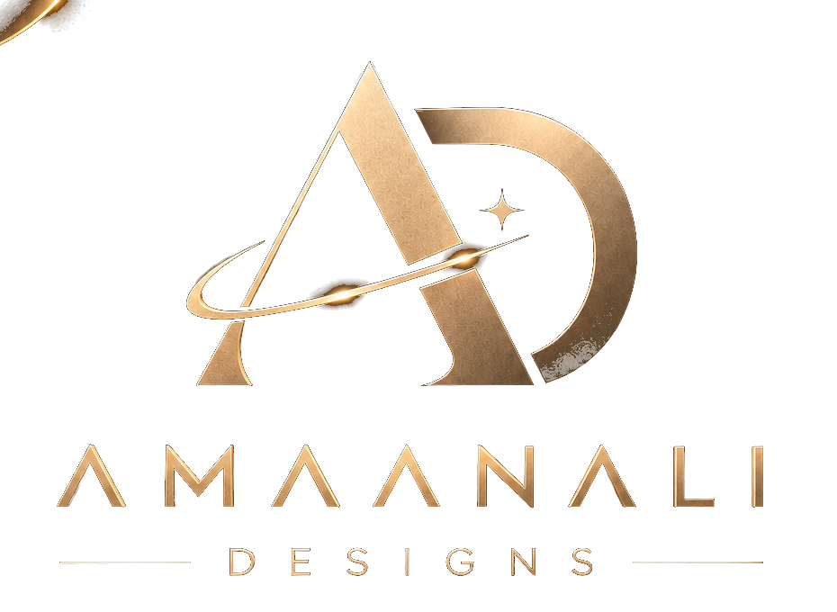

PROJECT UPDATE23 SEP 2026
TravelMate has reached the final screen.
The flight-booking case study now includes the final supplied screen. The project can move into its completed case-study presentation.
MILESTONE · COMPLETE
Your project space for updates, milestones and the next design step.
The flight-booking case study now includes the final supplied screen. The project can move into its completed case-study presentation.
MILESTONE · COMPLETEFitness mobile app case study is available with the supplied interface screens.
View project ↗Flight-booking experience with the complete supplied screen set.
View project ↗Your next uploaded project can be added to the same portfolio system.
View selected work ↗Use the contact form to send a brief, revision request or new project idea.